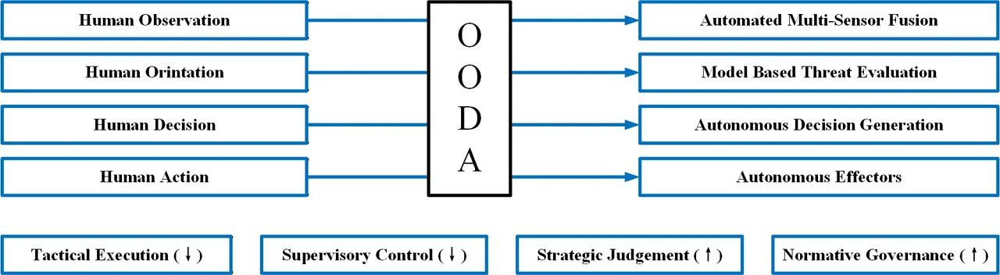
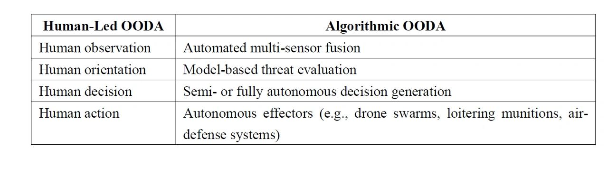
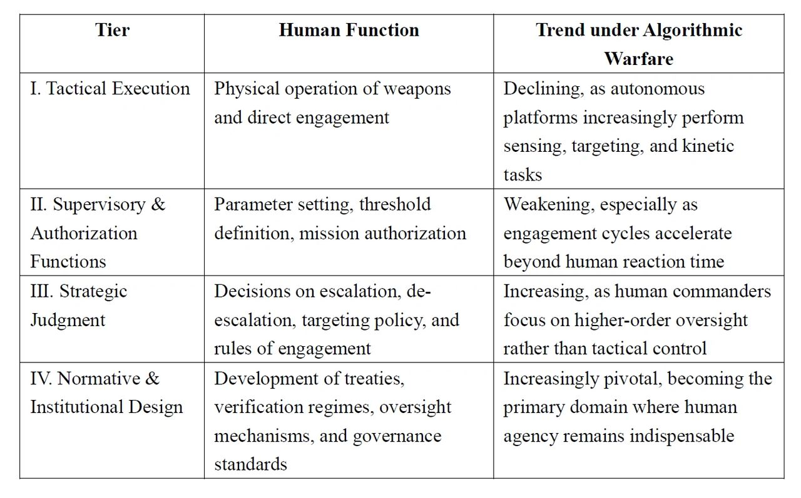

Unmanned Algorithmic Warfare and Human Role Reconfiguration:

An International Law Perspective
Author: Dr. Shaoyuan Wu
ORCID: https://orcid.org/0009-0008-0660-8232
Affiliation: Global AI Governance and Policy Research Center, EPINOVA
Date: December 04, 2025
1. Introduction
As artificial intelligence (AI), autonomous weapon systems (AWS), and highly automated command-and-control architectures increasingly permeate the battlespace, the structure of armed conflict is undergoing a profound shift toward de-humanization. Existing frameworks of international humanitarian law (IHL) and the law of state responsibility were built on the premise that human agents occupy the center of the decision–execution chain. Yet algorithmic perception, target identification, tactical optimization, and autonomous engagement now routinely exceed human cognitive capacity, both in speed and in operational complexity.
This article advances an analytic framework of Algorithmic Unmanned Warfare, arguing that the issue is not that international law ceases to apply, but that it confronts a crisis of operationalization: the legal principles remain normatively intact, yet the factual and structural conditions necessary for their implementation are progressively eroding. The discussion proceeds across five dimensions—evolution of warfare, attribution and responsibility, AI territoriality, meaningful human control, and future institutional reconstruction—each illustrating how algorithmic systems reshape the practical foundations upon which legal regulation has long depended.
Key findings include:
a) AI is evolving from an “enabling tool” into the structural core of the battlespace, shifting the logic of warfare from “humans–weapons–territory” to “systems–algorithms–nodes.”
b) IHL continues to apply, but its operationalization is undermined by algorithmic opacity (or more precisely, epistemic opacity of machine-learning models), model unpredictability, and distributed technological supply chains, complicating distinction, proportionality, and precaution assessments.
c) Under the law of state responsibility, abstract legal attribution remains valid, yet factual attribution becomes extremely difficult due to emergent behavior, cross-border training pipelines, and ambiguous notions of effective control (Boothby 2016; Milanovic 2020).
d) Warfare space increasingly manifests as AI territoriality, competition over compute infrastructure, data flows, cloud regions, and algorithmic governance regimes, posing new interpretive challenges for the UN Charter’s rules on the use of force and armed attack.
e) Human roles are not disappearing but are migrating upward, from tactical execution to strategic judgment, normative arbitration, and institutional design, the levels at which human agency remains indispensable.
This article concludes that the AI era represents not a technical upgrade of warfare, but a fundamental stress test for the foundations of the law of armed conflict. Preserving governable, auditable, and accountable frameworks for the use of force will determine whether AI militarization reinforces international order or accelerates its erosion.
2. Technological Disruption and the Operationalization Crisis of International Law
The third decade of the twenty-first century has witnessed the accelerated integration of AI-enabled sensing, recognition, and decision-making systems into active theatres of conflict. The Russia–Ukraine conflict, the 2020 Nagorno-Karabakh war, and recurrent hostilities in the Middle East demonstrate a pronounced shift toward drone swarms, loitering munitions, and semi-autonomous strike systems. Unlike previous technologies, AI does not merely enhance combat efficiency; it reshapes the functional logic of warfare:
- Decision cycles shrink from seconds or minutes to milliseconds;
- The operational chain transitions from “commander–soldier–weapon” to “sensor–model–effecter”;
- Strategic interaction shifts from territorial control to control of data flows, compute resources, and algorithmic standards.
While the international legal position is clear that IHL and the law of armed conflict apply to all means and methods of warfare, including those enabled by AI (ICRC 2021; Schmitt 2017), the practical challenges that follow are different:
- Can commanders satisfy legal requirements of reasonable foreseeability and effective control when model behavior is opaque and context-dependent?
- Can attribution be established when training pipelines span multiple jurisdictions and involve private actors?
- How should the UN Charter’s categories of “use of force” and “armed attack” be interpreted when critical harm is inflicted through cloud infrastructure, data poisoning, or model manipulation?
3. The Evolution of Warfare: From Human-Dominated to System-Dominated Conflict
3.1 The Mechanized and Information-Age Paradigms
a) Mechanized Warfare
Industrial-era conflicts were driven primarily by human intention and the application of physical force. Even as the scale and lethality of violence reached unprecedented heights during the World Wars, decision-making authority, along with legal attribution and responsibility, remained firmly anchored in identifiable human commanders. The conduct of hostilities, including targeting decisions and the use of emerging weapons technologies, continued to reflect a human-centric chain of command in which agency, intent, and accountability were clearly traceable.
b) Information-Age Warfare
The post–Gulf War era ushered in a new model of conflict characterized by C4ISR-enabled operations, precision strike capabilities, networked sensors, and real-time data integration. Yet despite this technological sophistication, humans remained decisively “in the loop”:
- Human judgment guided target identification;
- Rules of engagement (ROE) governed the authorization of force;
- Responsibility could be allocated along established hierarchical command chains.
Under these conditions, the core principles of international humanitarian law, distinction, proportionality, and precautions in attack, retained practical operability. Human oversight ensured that these principles could be meaningfully applied, as commanders exercised situational judgment, assessed risks, and reconciled military necessity with humanitarian constraints.
3.2 Algorithmic Warfare: The Structural Rewrite of the OODA Loop
AI fundamentally alters the traditional OODA (Observe–Orient–Decide–Act) loop (Boyd 1996; Kallberg 2019), transforming it from a human-guided cognitive cycle into a predominantly machine-driven process:
Table 1 Human-Led vs. Algorithmic OODA

The OODA framework is not invoked here as a mechanistic model of legal responsibility, but as an analytical device to illustrate where human judgment is being structurally displaced in the transition toward algorithmic decision cycles.
This structural shift generates several profound implications:
- Diminished human cognitive presence in real-time decision chains, as engagement timelines compress beyond the thresholds of human reaction.
- Greater difficulty in reconstructing intent for legal and accountability assessments, given that outcomes may reflect complex model interactions rather than discrete human choices.
- Accelerated engagement cycles that challenge the practical application of IHL principles, especially proportionality and the duty to take precautions, within the temporal windows in which AI-driven systems operate.
The consequence is not the obsolescence of international law, but a widening implementation gap between the normative requirements of IHL and the operational realities shaped by autonomous and algorithmic systems.
4. International Humanitarian Law and State Responsibility: From Applicability to Operational Feasibility
4.1 IHL Remains Applicable, but Its Factual Preconditions Are Being Eroded
As a matter of doctrine, international humanitarian law applies to allmeans and methods of warfare, irrespective of their technological sophistication. The core principles of distinction, proportionality, and precautions in attack remain legally robust and normatively binding. However, the practical implementation of these principles increasingly depends on factual conditions that AI-enabled systems partially undermine. Three structural features of contemporary AI are particularly consequential:
a) Algorithmic opacity undermines reasonable foreseeability
Deep neural systems often operate as “black boxes,” making it difficult for commanders or legal advisors to anticipate how an AI model will behave under varying operational conditions (Burrell 2016; Crootof 2022). Without a reliable ability to foresee system responses, the duty to take feasible precautions risks becoming hollow.
b) Emergent model behavior complicates intent analysis
AI-enabled outcomes may arise not from deliberate human choices but from interactions among training data, environmental inputs, and model architectures. Such emergent behaviors obscure traditional markers of intent, complicating assessments of whether an attack can be attributed to a human decision or constitutes an autonomous deviation (Rahwan 2019; Danks and London 2017).
c) Real-time optimization challenges proportionality assessments
Autonomous or semi-autonomous systems may optimize for tactical efficiency, speed, accuracy, resource allocation, without incorporating the contextual, value-laden judgments required to assess expected civilian harm or incidental damage. The velocity of these engagement cycles can outpace human oversight, rendering legally required assessments practically infeasible.
Taken together, these factors do not invalidate the normative authority of IHL. Rather, they create a widening operational feasibility gap between the law’s doctrinal requirements and the technological realities of algorithmically driven warfare.
4.2 State Responsibility: Legal Validity vs. Evidentiary Fragility
Under the International Law Commission’s Articles on State Responsibility for Internationally Wrongful Acts (ARSIWA), the legal framework governing attribution remains conceptually stable (ILC 2001; Crawford 2013):
- Conduct of state organs, including armed forces, is attributable to the state;
- The deployment of autonomous or AI-enabled systems does not alter the categories or tests for attribution;
- The nature of the weapon—whether fully autonomous, semi-autonomous, or operator-controlled—does not exempt the state from responsibility for internationally wrongful acts.
However, AI-enabled warfare introduces unprecedented evidentiary and factual burdensthat complicate the application of these traditional tests (Schmitt and Vihul 2020).
a) Identifying which actor’s system executed a strike may be technically complex
In environments saturated with near-identical autonomous platforms, spoofed signatures, or convergent behaviors among machine-learning systems, reconstructing which entity controlled a particular strike can become exceedingly difficult.
b) Distributed and cross-border training pipelines obscure “effective control”
AI systems may be trained in one jurisdiction, fine-tuned in another, and deployed by a third. Private companies, cloud service providers, and multinational subcontractors blur the boundaries of factual control, raising questions about whether a state exercised the requisite effective control or overall control for attribution.
c) Autonomy, adaptation, and emergent behavior weaken foreseeability
ARSIWA’s attribution standards assume a baseline level of foreseeability and intent. Yet AI systems may generate actions that diverge from expected behavior due to environmental factors, model drift, or emergent interactions. This challenges the ability to evaluate whether a wrongful act was foreseeable, and therefore imputable, to the state.
In sum, while the legal doctrines of state responsibility remain intact, the evidentiary foundations necessary to apply them, foreseeability, control, traceability, and causal reconstruction, are increasingly destabilized in the context of algorithmic and autonomous warfare.
4.3 The Role of Developers and Contractors
Private companies and defense contractors play an increasingly decisive role in shaping the design, training, and deployment of AI-enabled military systems. Their technical influence is substantial, yet their legal status under international law is limited:
- They are not subjects of international law in the sense of bearing direct obligations or responsibilities under IHL or the law of state responsibility;
- They do not incur direct international responsibility, even when their products materially contribute to harmful outcomes in armed conflict;
- Their conduct is instead mediated through state responsibility (e.g., attribution of acts of private actors under state control) and domestic regulatory or criminal frameworks, such as export controls, procurement standards, corporate liability, and human rights–related due diligence obligations.
Although developers and contractors may profoundly shape the behavior of autonomous systems, treating them as independent international legal actors risks both conceptual confusion and doctrinal overreach. The proper analytical approach is to understand their influence as factual inputs into state conduct, not as autonomous subjects of international legal responsibility.
5. AI Territoriality and the UN Charter: New Frontiers of the Use of Force
5.1 AI Territoriality: From Geography to Systemic Domains
The emergence of AI-enabled military systems is expanding the strategic landscape of conflict beyond traditional geographic boundaries. What is at stake is not only physical terrain but a multilayered ecosystem of computational, informational, and institutional infrastructures that collectively constitute a new form of strategic space—what may be termed AI territoriality (Nye 2010; De Spiegeleire et al. 2017). This space can be analytically divided into three interlocking layers:
- Physical Layer: The hardware backbone of the global digital environment, including data centers, submarine fiber-optic cables, satellite constellations, ground stations, and key energy conduits. Disruption or seizure of these nodes can severely impair a state’s military and governmental functions without approaching its territorial borders.
- Digital Layer: The virtual environments where computational power and data flows are managed—cloud compute regions, data sovereignty zones, training pipelines, high-value datasets, and proprietary or open-source model ecosystems. Control over these digital infrastructures can shape a state’s access to intelligence, targeting, communications, and command systems.
- Institutional Layer: The governance structures that regulate how digital and AI systems are designed, accessed, updated, and transferred, including cryptographic standards, communication protocols, algorithmic audit requirements, licensing regimes for dual-use models, and export control frameworks.
AI territoriality does not replace traditional territorial sovereignty but introduces a functional layer of strategic control that international law has yet to fully conceptualize.
Taken together, these layers constitute a distributed battlespace in which strategic advantage may be achieved not by altering physical borders, but by controlling or disrupting systemic nodes that underpin a state’s decision-making and military effectiveness. Such forms of interference raise complex questions for the interpretation and application of the UN Charter’s rules on the use of force, armed attack, and state sovereignty.
5.2 Rethinking “Use of Force” and “Armed Attack”
The rise of AI-enabled military systems poses difficult questions for the interpretation of the UN Charter’s core concepts, “use of force” under Article 2(4) and “armed attack” under Article 51. As conflict increasingly manifests through computational and informational infrastructures, several doctrinal issues arise:
- Does disabling a state’s compute backbone—its primary cloud or high-performance computing infrastructure—constitute a use of force? If such disruption degrades national command-and-control or critical civil infrastructure, the effects may approach those of traditional kinetic operations.
- Can the manipulation or subversion of an adversary’s AI-driven command system amount to an indirect armed attack? Model poisoning, adversarial attacks, or deceptive data streams may cause autonomous systems to misidentify targets or trigger unintended engagements, potentially resulting in lethal consequences.
- Does severing or impairing cloud–satellite communication links justify the invocation of Article 51 self-defense? When such interference critically undermines military communications, early-warning systems, or nuclear command-and-control architectures, the scale and gravity may reach the threshold of an armed attack.
a) The turn toward an effects-based approach
An effects-based approach has gained increasing support in scholarship and state practice (Schmitt 2021; Tsagourias and Farrell 2022). Under this view, actions that generate consequences equivalent to kinetic attacks—even in the absence of physical damage—may fall within the ambit of prohibited force or armed attack. The decisive factor becomes the scale and impact, not the modality, of the operation.
An effects-based approach must be applied cautiously, however, to avoid unintentionally lowering the threshold for the lawful resort to force and thereby expanding the scope of permissible self-defense beyond what the UN Charter envisions.
b) Why AI complicates this analysis
The incorporation of AI into military systems amplifies these interpretive challenges:
- Attacks may be covert, algorithmic, or non-attributable, leaving minimal traces of intervention.
- Evidence may be distributed, ephemeral, or stored across jurisdictions, complicating both detection and verification.
- Harm may arise through cascading systemic failures, where initial disruptions propagate across cloud systems, sensor networks, and autonomous platforms.
These characteristics create a substantially more complex environment for determining when an AI-enabled operation constitutes a use of force or triggers the inherent right of self-defense.
6. Re-Embedding Human Agency: From Input Controllers to Normative Arbiters
6.1 Meaningful Human Control (MHC) as a Normative Anchor
The concept of MHC has emerged as a central normative safeguard in debates over autonomous weapon systems (Ekelhof 2019; Horowitz and Scharre 2021; ICRC 2023). Importantly, MHC does not require a human operator to manually initiate every instance of force. Rather, it establishes a set of conditions under which human agency, judgment, and responsibility can be meaningfully preserved across the life cycle of AI-enabled weapon systems.
MHC therefore entails:
- Design-phase understanding of system boundaries and failure modes
Developers, commanders, and legal advisors must possess a sufficiently clear understanding of the system’s performance characteristics, operational constraints, and potential failure points to assess its lawfulness and suitability for intended missions. - Deployment-phase judgment regarding risk, context, and environment
Human decision-makers must determine when, where, and under what constraints the system may be deployed, exercising contextual judgment about civilian presence, environmental uncertainty, and possible escalation dynamics. - Operational-phase override mechanisms enabling effective intervention
Even in high-speed engagement environments, systems must incorporate mechanisms—technical or procedural—that allow humans to intervene, modify parameters, deactivate the system, or abort operations when necessary.
Taken together, these elements position MHC as a normative bridge linking human responsibility with algorithmic autonomy. It preserves the conditions under which human decision-makers can credibly satisfy international humanitarian law’s requirements of intent, foreseeability, proportionality, and accountability, even as autonomous systems assume greater roles in tactical execution.
While MHC provides a necessary normative anchor, it is not a panacea; it cannot fully eliminate unpredictability, model drift, or emergent risks inherent to autonomous and adaptive systems.
6.2 A Four-Tier Reconfiguration of Human Roles
As algorithmic and autonomous systems assume greater responsibility for real-time battlefield functions, human involvement in the conduct of hostilities is not eliminated but repositioned. The locus of human agency shifts upward through a stratified architecture of decision-making and governance. This transformation can be conceptualized as a four-tier model:
Table 2. Four-Tier Reconfiguration of Human Roles

This tiered framework highlights a fundamental shift: human agency is not disappearing but migrating, from the physical execution of violence to its authorization, justification, and regulation. In the context of AI-enabled conflict, humans increasingly act not as real-time operators but as normative arbiters, responsible for defining the legitimacy, boundaries, and accountability structures governing algorithmic force.
7. Conclusion
AI-enabled warfare does not render international law obsolete. Rather, it exposes a widening divergence between the normative expectations embedded in IHL and the operational realities produced by autonomous and algorithmic systems. The central challenge is not one of applicability but of operationalization: whether the factual conditions that make distinction, proportionality, attribution, and precaution meaningful can still be maintained as human judgment is structurally displaced.
Addressing this gap requires a three-layer reconstruction of the legal and institutional architecture governing the use of force. Normatively, states must reaffirm IHL’s applicability while developing minimum standards of predictability, controllability, and auditability, supported by Article 36 reviews that incorporate model-level testing and transparency. Structurally, governance mechanisms must evolve to recognize compute infrastructure and data flows as strategic assets and to integrate algorithmic effects into interpretations of “use of force” and “armed attack” under the UN Charter. Ethically, meaningful human control must be codified as a baseline constraint, accompanied by international consensus on the limits of high-risk autonomous systems and safeguards against systemic or uncontrollable escalation.
The emergence of autonomous conflict thus serves as a stress test for the international legal order. The question is no longer whether international law applies, but whether its mechanisms for accountability, restraint, and decision authority can withstand the pressures introduced by algorithmic warfare. Preserving human judgment—not machine optimization—as the final arbiter of war’s legitimacy and limits will be decisive for maintaining a governable and stable international security environment.
8. Final Reflection
The advent of AI in warfare is best understood not as a technological anomaly but as a stress test for the international legal order. The central question is no longer whether international law applies, but whether its mechanisms for attribution, accountability, and restraint can withstand the pressures introduced by autonomous and algorithmic systems. Ensuring that human judgment—not machine optimization—remains the final arbiter of war’s legitimacy and limits is essential to the future of global order (Dinstein 2022; Sassòli 2021).
Reference:
Boothby, William H. 2016. Weapons and the Law of Armed Conflict. Oxford: Oxford University Press.
Boyd, John. 1996. “The Essence of Winning and Losing.” Unpublished briefing.
Burrell, Jenna. 2016. “How the Machine ‘Thinks’: Understanding Opacity in Machine Learning Algorithms.” Big Data & Society 3(1).
Crawford, James. 2013. State Responsibility: The General Part. Cambridge: Cambridge University Press.
Crootof, Rebecca. 2022. “War Torts: Accountability for Autonomous Weapons Systems.” University of Pennsylvania Law Review 170(5): 1347–1416.
Danks, David, and Alex John London. 2017. “Algorithmic Bias in Autonomous Systems.” Proceedings of the 26th International Joint Conference on Artificial Intelligence (IJCAI).
De Spiegeleire, Stephan, Matthijs Maas, and Tim Sweijs. 2017. AI and the Future of Defense. The Hague: The Hague Centre for Strategic Studies.
Dinstein, Yoram. 2022. The Conduct of Hostilities under the Law of International Armed Conflict. 4th ed. Cambridge: Cambridge University Press.
Ekelhof, Merel A. C. 2019. “Moving Beyond Semantics on Autonomous Weapons: Meaningful Human Control in Operation.” Global Policy 10(3): 343–348.
Horowitz, Michael C., and Paul Scharre. 2021. “AI in Military Applications: Emerging Trends and Implications.” Annual Review of Political Science 24: 253–270.
ICRC (International Committee of the Red Cross). 2021. “Autonomy, Artificial Intelligence and Robotics: Technical and Legal Challenges.” Geneva: ICRC.
ICRC. 2023. “Safeguarding Human Control over Weapons Systems.” Geneva: ICRC.
ILC (International Law Commission). 2001. Articles on Responsibility of States for Internationally Wrongful Acts (ARSIWA).United Nations.
Kallberg, Jan. 2019. “Navigating the OODA Loop in High-Velocity Cyber Conflict.” Cyber Defense Review.
Nye, Joseph S. 2010. Cyber Power. Cambridge, MA: Harvard Kennedy School.
Rahwan, Iyad. 2019. “Society-in-the-Loop: Programming the Algorithmic Social Contract.” Ethics and Information Technology 21(1): 5–14.
Sassòli, Marco. 2021. International Humanitarian Law: Rules, Controversies, and Solutions to Problems Arising in Warfare. Cheltenham: Edward Elgar.
Schmitt, Michael N. 2017. “Autonomous Weapon Systems and International Humanitarian Law.” Harvard National Security Journal 8(2): 140–164.
Schmitt, Michael N. 2021. “The Use of Force in Cyberspace: Emerging State Practice.” Texas Law Review 99(3): 490–524.
Schmitt, Michael N., and Liis Vihul, eds. 2020. Tallinn Manual 2.0 on the International Law Applicable to Cyber Operations. Cambridge: Cambridge University Press.
Tsagourias, Nicholas, and Russell Buchan. 2022. Research Handbook on the Law of Cyber Operations. Cheltenham: Edward Elgar.
Tsagourias, Nicholas, and Alasdair Farrell. 2022. “The Effects Doctrine in Cyber Operations.” Journal of Conflict & Security Law 27(1): 67–95.
Recommended Citation:
Wu, S.-Y. (2025). Unmanned Algorithmic Warfare and Human Role Reconfiguration: An International Law Perspective. EIPINOVA. https://epinova.org/publications/f/unmanned-algorithmic-warfare-and-human-role-reconfiguration.
Share this post: